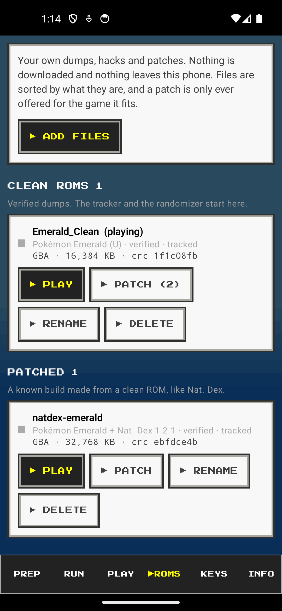
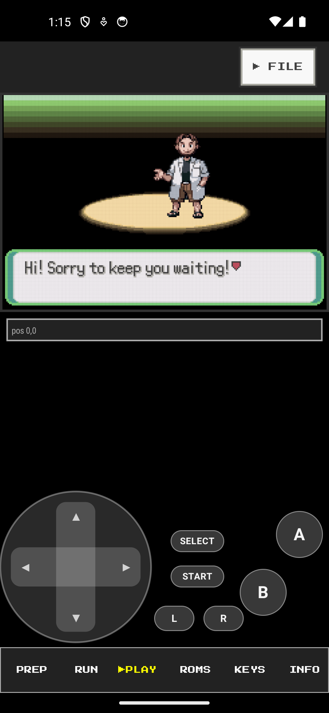
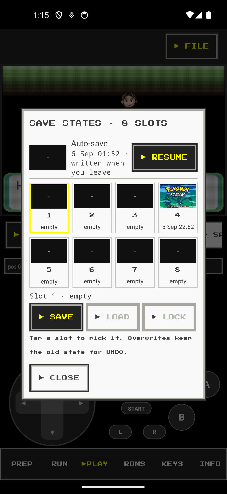
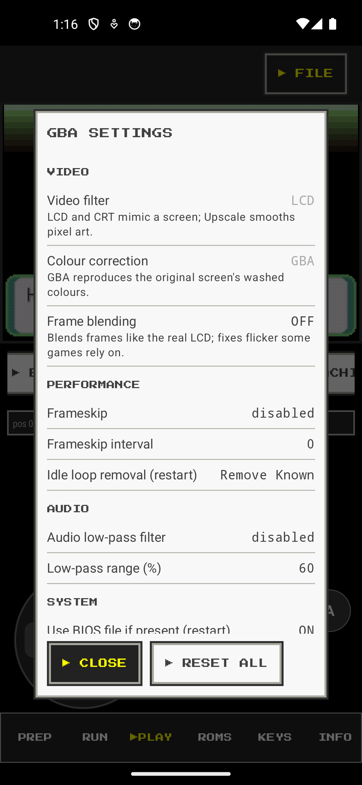
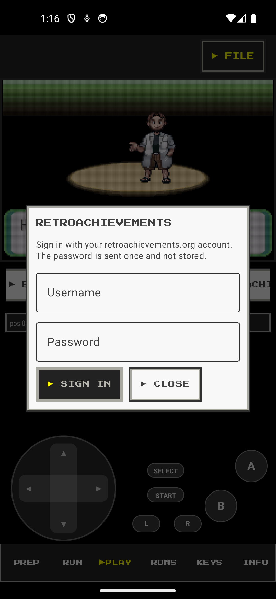

KaizoCore
Kaizo IronMON and Pokémon ROM hacks on your phone. The library checks your dump, the patcher refuses the wrong patch, the presets are the official rulesets, the randomizer runs on the device, the tracker reads the game live, and each screen goes into OBS as a browser source. One app instead of six.
Android, free, open source. Beta: it will have bugs, and the whole point of this page is to hear about them.
Download the latest build Report a problem Support the project
What it does
- Play Game Boy, Game Boy Color, GBA and DS games with save states, rewind, slow motion, cheats, controller support, custom layouts and skins.
- Prepare a run: add your own dump, apply a patch or a hack (only to the game it fits), pick a ruleset, randomize. Gen 1's two-pass randomization is done for you.
- Track the run with a clone of the PC IronMON tracker, reading the game as you play: party, opponent, moves seen, abilities revealed, badges, heals.
- Stream it: the game, the tracker and the DS screens each as an OBS browser source, with a clean view for the phone.
- Keep it: RetroAchievements, cloud sync of saves through the file picker, backups that never contain a ROM.
See it
45 seconds: library, patch, randomize, play, tracker, NEW RUN, OBS.






Before you install
You need your own game dumps. KaizoCore contains no ROMs, links to none and downloads none. Do not ask here where to get one; that request is deleted.
Android 8 or newer. A DS game wants a phone with at least 3 GB of RAM. Installing a downloaded APK means allowing installs from your browser or file manager when Android asks.
- Download the APK from the latest build and check its SHA-256 against the
.sha256file beside it. - Open it and allow the install.
- ROMs tab: ADD FILES, pick your dump. The library says what it is and whether it is clean.
- Run tab: pick the game and a ruleset, randomize. Play tab: play.
Report a problem
Fastest: the app's INFO tab has SEND FEEDBACK, which composes the report with your device and log lines and hands it to any app you like. Or use this form.
Support
The app is free and stays free; nothing is sold and nothing is gated. If it is useful, a donation goes to test phones for the device matrix, the domain and hosting, and the time to keep fixing what you report.
Credits and licence
Built on LibretroDroid with the mGBA, melonDS and Gambatte cores; Universal Pokémon Randomizer ZX and the Nat. Dex fork; rcheevos for RetroAchievements. The tracker follows the IronMON trackers by Besteon and the NDS IronMON Tracker. Nat. Dex Extension by CyanSMP64, used with permission. Licence: LICENSE_LINE. KaizoCore is not affiliated with Nintendo, Game Freak, The Pokémon Company, IronMON or RetroAchievements.